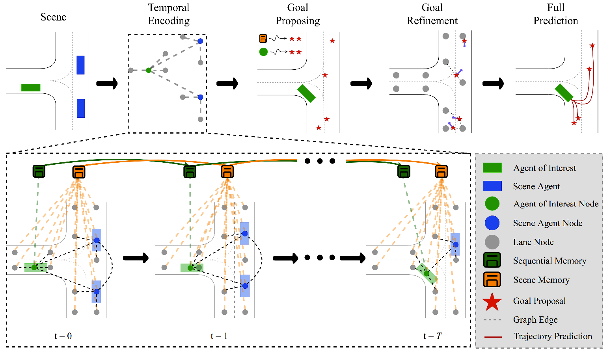

Example predictions from Argoverse-1 Motion Forecasting Dataset.
We display L = 6 predictions in orange (and closest trajectory to ground truth as blue)
where each one comprising different modalities. Different predictions capture different
speeds, orientations and driving behaviours in consistent with the map and road topologies.
Abstract
Predicting future locations of agents in the scene is an important problem in self-driving. In recent years, there has been a significant progress in representing the scene and the agents in it. The interactions of agents with the scene and with each other are typically modeled with a Graph Neural Network. However, the graph structure is mostly static and fails to represent the temporal changes in highly dynamic scenes. In this work, we propose a temporal graph representation to better capture the dynamics in traffic scenes. We complement our representation with two types of memory modules; one focusing on the agent of interest and the other on the entire scene. This allows us to learn temporally-aware representations that can achieve good results even with simple regression of multiple futures. When combined with goal-conditioned prediction, we show better results that can reach the state-of-the-art performance on the Argoverse benchmark.
Method Overview
We learn a dynamic scene representation where each timestamp is encoded as a temporal graph. We keep track of changes to the agent of interest with a sequential memory and to the entire scene with a scene memory. We generate goal proposals by using both the scene memory and the motion information related to the agent of interest. Finally, we predict the full trajectories conditioned on the refined goal locations
[Code]
Examples


Here, you can see some of our predictions and how different components affect the final predictions.
First one shows the naive VectorNet prediction,
second one shows the regressive prediction with Temporal Encoding,
third one shows the Temporal Encoding prediction with goal conditioning
and the final one shows the comparison between best predictions among them and ground truth trajectory.
Increased trajectory perfomance with Temporal Encoding shows the importance of learning temporal dynamics in the scene
as well as memory modules we proposed.
Paper
Trajectory Forecasting on Temporal Graphs
Gorkay Aydemir, Adil Kaan Akan and Fatma Guney